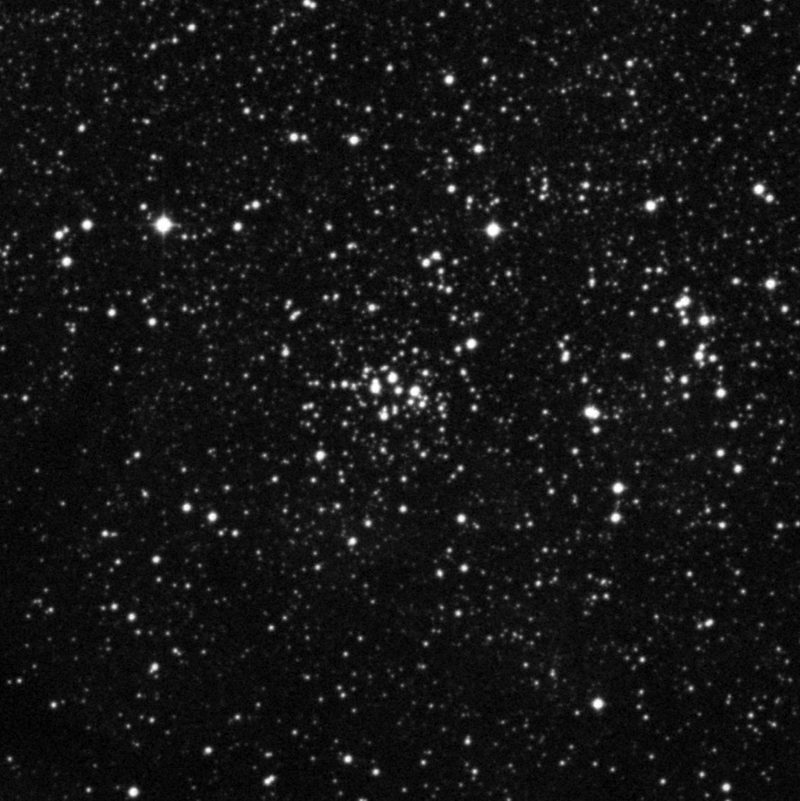
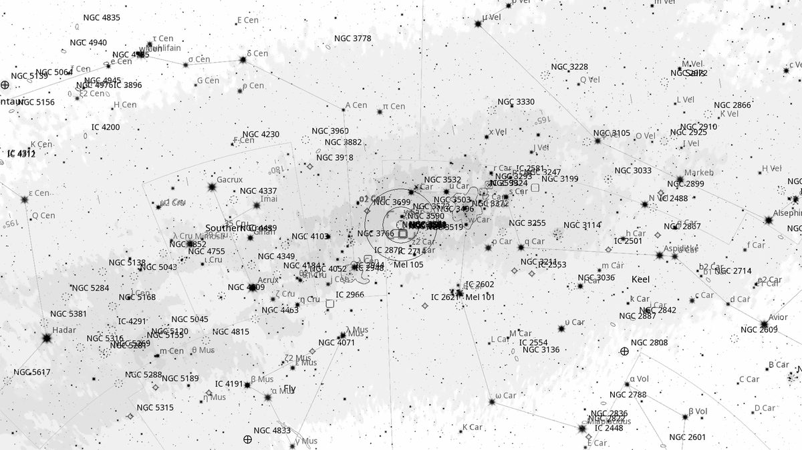
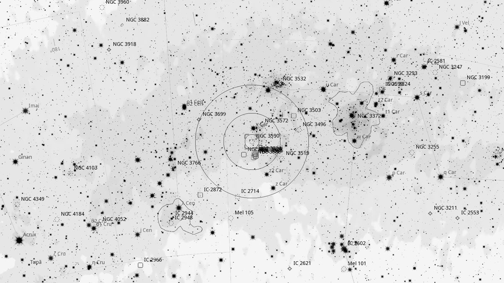
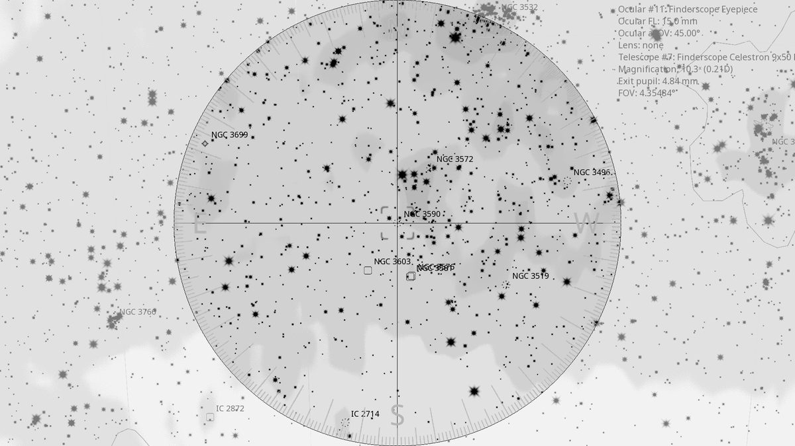
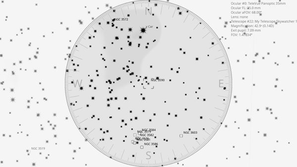

NGC 3590 (OC)
| R.A. | Dec. | Size | Mag | SB | Class | Type | Distance | Chart |
|---|---|---|---|---|---|---|---|---|
| 11h 13m 00.8s | -60° 47′ 32.7″ | 4.0′ | 8.2 | 10.9 | II1p | OC | -- | -- |

Interactive Sky View
Background
NGC 3590 is a small, compact open cluster about 7,000 light-years away, also part of the Carina OB1 association. It sits a fraction of a degree from NGC 3572 and is often observed in the same field of view.
My Observing Notes
30-cm (SkyWatcher 12-inch f/5): Picked up in the same 35 mm Panoptic field as NGC 3572 (drift south from NGC 3532). Smaller and more compact than NGC 3572; the two clusters plus a loose group of stars between them produce the appearance of three interacting clusters in one rich field.(10 April 2026)
25-cm (Meade 10-inch LX200): Earliest Carina visit of the night. Quite dispersed at this aperture, with several smaller pockets of stars visible at the 8.2-magnitude threshold.(Thursday, April 2025)
Charts



